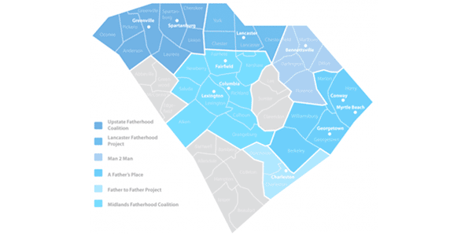

Programs
The Center for Fathers and Families works with local fatherhood programs in 11 locations to deliver quality, father-friendly services throughout South Carolina.
A Father's Place
Serving: Horry, Georgetown, Marion, Williamsburg, and Berkeley Counties.
The mission of A Father’s Place is to engage fathers in the positive support of their children and enhance community support for fatherhood througout the Waccamaw region.
Executive Director:
Wallace E
www.afathersplace.org
-
Conway Location
P. O. Box 1291
809 Wright Boulevard
Conway, SC 29528
-
Myrtle Beach Location
Historic Myrtle Beach Colored School
Museum and Education Center
900 Dunbar Street
Myrtle Beach, SC 29577
-
Georgetown Location
107 Screven Street
Georgetown, SC 29440
Site Director: Lisa F
Man 2 Man
Serving: Marlboro, Dillon, Darlington, Florence, and East Chesterfield Counties
The mission of Man 2 Man is to engage fathers in the positive support of their children and enhance community support for fatherhood througout the Pee Dee region.
Executive Director:
Derrick D
www.man2manfathers.com
-
Bennettsville Location
110 South Parsonage Street
Bennettsville, SC 29512
Father to Father Project, Inc.
Serving: Charleston and Dorchester Counties
The mission of Father to Father, Inc., is the engage fathers in the positive support of their children and to enhance the community.
Executive Director:
William J
www.fathertofather.org
-
North Charleston Location
4731 Mixson Avenue
North Charleston, SC 29405-5111
Upstate Fatherhood Coalition
Serving: Greenville, Spartanburg, Pickens, Oconee, Anderson, Laurens, Union, and Cherokee Counties.
The mission of Upstate Fatherhood Coalition is to engage fathers in the positive support of their children and enhance community support for fatherhood througout the Upstate.
Executive Director:
Kelly W
www.upstatefathers.org
-
Greenville Location
730 South Pleasantburg Drive
Suite 205
Greenville, South Carolina 29607
-
Spartanburg Location
300 Union Street, Suite E
Spartanburg, SC 29302
Greenville Location
730 South Pleasantburg Drive
Suite 205
Greenville, South Carolina 29607
Spartanburg Location
300 Union Street, Suite E
Spartanburg, SC 29302
Midlands Fatherhood Coalition
Serving: Fairfield Lexington, Richland, Newberry, Saluda, Aiken, Orangeburg, Kershaw, and Calhoun Counties.
The mission of Midlands Fatherhood Coalition is to engage fathers in the positive support of their children and enhance community support for fatherhood througout the Midlands.
Executive Director:
Angela M
Assistant Executive Director:
Charles B
www.midlandsfathers.com
-
Fairfield Location
201 Moultrie Street
Winnsboro, SC 29180
p>Phone: 803.815.0447 -
Lexington Location
106 Fabrister Lane, Suite J
Lexington, SC 29072
-
Richland Location
1821 Hampton Street
Columbia, SC 29201
Lancaster Father Project
Serving: Lancaster, Chester, York, and West Chesterfield Counties
The mission of the Lancaster Father Project, Inc., is to support fathers, families, and communities through social and economic development.
Executive Director:
Tyrom F
www.lanfatherhood.org
-
Lancaster Location
117 South Wylie Street
Lancaster, SC 29720
p>Phone: 803.283.3444